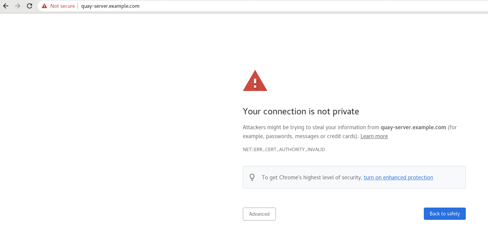
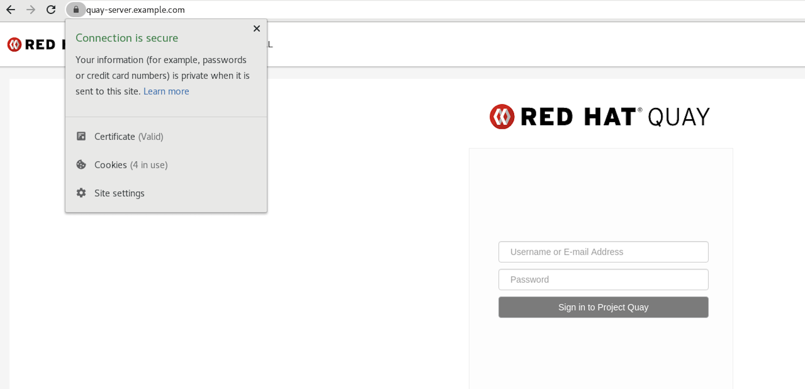

Red Hat Quay is an enterprise-quality registry for building, securing and serving container images. The documents in this section detail how to deploy Red Hat Quay for proof of concept, or non-production, purposes. The primary objectives of this document includes the following:
-
How to deploy Red Hat Quay for basic non-production purposes.
-
Asses Red Hat Quay’s container image management, including how to push, pull, tag, and organize images.
-
Explore availability and scalability.
-
How to deploy an advanced Red Hat Quay proof of concept deployment using SSL/TLS certificates.
Beyond the primary objectives of this document, a proof of concept deployment can be used to test various features offered by Red Hat Quay, such as establishing superusers, setting repository quota limitations, enabling Splunk for action log storage, enabling Clair for vulnerability reporting, and more. See the "Next steps" section for a list of some of the features available after you have followed this guide.
This proof of concept deployment procedure can be followed on a single machine, either physical or virtual.
Prerequisites
-
Red Hat Enterprise Linux (RHEL) 9
-
To obtain the latest version of Red Hat Enterprise Linux (RHEL) 9, see Downlad Red Hat Enterprise Linux.
-
For installation instructions, see the Product Documentation for Red Hat Enterprise Linux 8.
-
-
An active subscription to Red Hat
-
Two or more virtual CPUs
-
4 GB or more of RAM
-
Approximately 30 GB of disk space on your test system, which can be broken down as follows:
-
Approximately 10 GB of disk space for the Red Hat Enterprise Linux (RHEL) operating system.
-
Approximately 10 GB of disk space for Docker storage for running three containers.
-
Approximately 10 GB of disk space for Red Hat Quay local storage.
NoteCEPH or other local storage might require more memory.
More information on sizing can be found at Quay 3.x Sizing Guidlines.
-
Installing Podman
This document uses Podman for creating and deploying containers.
For more information on Podman and related technologies, see Building, running, and managing Linux containers on Red Hat Enterprise Linux 9.
|
Important
|
If you do not have Podman installed on your system, the use of equivalent Docker commands might be possible, however this is not recommended. Docker has not been tested with Red Hat Quay 3.11, and will be deprecated in a future release. Podman is recommended for highly available, production quality deployments of Red Hat Quay 3.11. |
Use the following procedure to install Podman.
-
Enter the following command to install Podman:
$ sudo yum install -y podman -
Alternatively, you can install the
container-toolsmodule, which pulls in the full set of container software packages:$ sudo yum module install -y container-tools
Preparing Red Hat Enterprise Linux for a Red Hat Quay proof of concept deployment
Use the following procedures to configure Red Hat Enterprise Linux (RHEL) for a Red Hat Quay proof of concept deployment.
Install and register the RHEL server
Use the following procedure to configure the Red Hat Enterprise Linux (RHEL) server for a Red Hat Quay proof of concept deployment.
-
Install the latest RHEL 9 server. You can do a minimal, shell-access only install, or Server plus GUI if you want a desktop.
-
Register and subscribe your RHEL server system as described in How to register and subscribe a RHEL system to the Red Hat Customer Portal using Red Hat Subscription-Manager
-
Enter the following commands to register your system and list available subscriptions. Choose an available RHEL server subscription, attach to its pool ID, and upgrade to the latest software:
# subscription-manager register --username=<user_name> --password=<password> # subscription-manager refresh # subscription-manager list --available # subscription-manager attach --pool=<pool_id> # yum update -y
Registry authentication
Use the following procedure to authenticate your registry for a Red Hat Quay proof of concept.
-
Set up authentication to
registry.redhat.ioby following the Red Hat Container Registry Authentication procedure. Setting up authentication allows you to pull theQuaycontainer.NoteThis differs from earlier versions of Red Hat Quay, when the images were hosted on Quay.io.
-
Enter the following command to log in to the registry:
$ sudo podman login registry.redhat.ioYou are prompted to enter your
usernameandpassword.
Firewall configuration
If you have a firewall running on your system, you might have to add rules that allow access to Red Hat Quay. Use the following procedure to configure your firewall for a proof of concept deployment.
-
The commands required depend on the ports that you have mapped on your system, for example:
# firewall-cmd --permanent --add-port=80/tcp \ && firewall-cmd --permanent --add-port=443/tcp \ && firewall-cmd --permanent --add-port=5432/tcp \ && firewall-cmd --permanent --add-port=5433/tcp \ && firewall-cmd --permanent --add-port=6379/tcp \ && firewall-cmd --reload
IP addressing and naming services
There are several ways to configure the component containers in Red Hat Quay so that they can communicate with each other, for example:
-
Using the IP addresses for the containers. You can determine the IP address for containers with
podman inspectand then use the values in the configuration tool when specifying the connection strings, for example:$ sudo podman inspect -f "{{.NetworkSettings.IPAddress}}" postgresql-quayThis approach is susceptible to host restarts, as the IP addresses for the containers will change after a reboot.
-
Using a naming service. If you want your deployment to survive container restarts, which typically result in changed IP addresses, you can implement a naming service. For example, the dnsname plugin is used to allow containers to resolve each other by name.
-
Using the host network. You can use the
podman runcommand with the--net=hostoption and then use container ports on the host when specifying the addresses in the configuration. This option is susceptible to port conflicts when two containers want to use the same port. This method is not recommended. -
Configuring port mapping. You can use port mappings to expose ports on the host and then use these ports in combination with the host IP address or host name.
This document uses port mapping and assumes a static IP address for your host system.
| Component | Port mapping | Address |
|---|---|---|
Quay |
|
http://quay-server.example.com |
Postgres for Quay |
|
quay-server.example.com:5432 |
Redis |
|
quay-server.example.com:6379 |
Postgres for Clair V4 |
|
quay-server.example.com:5433 |
Clair V4 |
|
http://quay-server.example.com:8081 |
Preparing your system to deploy Red Hat Quay
For a proof of concept Red Hat Quay deployment, you must configure port mapping, a database, and Redis prior to deploying the registry. Use the following procedures to prepare your system to deploy Red Hat Quay.
Configuring port mapping for Red Hat Quay
You can use port mappings to expose ports on the host and then use these ports in combination with the host IP address or host name to navigate to the configuration tool endpoint.
-
Enter the following command to obtain your static IP address for your host system:
$ ip aExample output--- link/ether 6c:6a:77:eb:09:f1 brd ff:ff:ff:ff:ff:ff inet 192.168.1.132/24 brd 192.168.1.255 scope global dynamic noprefixroute wlp82s0 --- -
Add the IP address and a local hostname, for example,
quay-server.example.comto your/etc/hostsfile that will be used to reach the configuration tool endpoint. You can confirm that the IP address and hostname have been added to the/etc/hostsfile by entering the following command:$ cat /etc/hostsExample output192.168.1.138 quay-server.example.com
Configuring the database
Red Hat Quay requires a database for storing metadata. PostgreSQL is used throughout this document. For this deployment, a directory on the local file system to persist database data is used.
Use the following procedure to set up a PostgreSQL database.
-
In the installation folder, denoted here by the
$QUAYvariable, create a directory for the database data by entering the following command:$ mkdir -p $QUAY/postgres-quay -
Set the appropriate permissions by entering the following command:
$ setfacl -m u:26:-wx $QUAY/postgres-quay -
Start the
Postgrescontainer, specifying the username, password, and database name and port, with the volume definition for database data:$ sudo podman run -d --rm --name postgresql-quay \ -e POSTGRESQL_USER=quayuser \ -e POSTGRESQL_PASSWORD=quaypass \ -e POSTGRESQL_DATABASE=quay \ -e POSTGRESQL_ADMIN_PASSWORD=adminpass \ -p 5432:5432 \ -v $QUAY/postgres-quay:/var/lib/pgsql/data:Z \ registry.redhat.io/rhel8/postgresql-13:1-109
-
Ensure that the Postgres
pg_trgmmodule is installed by running the following command:$ sudo podman exec -it postgresql-quay /bin/bash -c 'echo "CREATE EXTENSION IF NOT EXISTS pg_trgm" | psql -d quay -U postgres'NoteThe
pg_trgmmodule is required for theQuaycontainer.
Configuring Redis
Redis is a key-value store that is used by Red Hat Quay for live builder logs.
Use the following procedure to deploy the Redis container for the Red Hat Quay proof of concept.
-
Start the
Rediscontainer, specifying the port and password, by entering the following command:$ sudo podman run -d --rm --name redis \ -p 6379:6379 \ -e REDIS_PASSWORD=strongpassword \ registry.redhat.io/rhel8/redis-6:1-110
Deploying Red Hat Quay config tool
Use the following procedure to deploy the Red Hat Quay configuration tool. Afterwards, you can navigate to the registry endpoint and generate a configuration file that details all components, including registry settings, the database, and Redis connection parameters.
-
To generate a configuration file, enter the following command to run the
Quaycontainer inconfigmode. You must specify a password, for example, the stringsecret:$ sudo podman run --rm -it --name quay_config -p 80:8080 -p 443:8443 registry.redhat.io/quay/quay-rhel8:v3.11.0 config secret
-
Use your browser to access the user interface for the configuration tool at
http://quay-server.example.com.NoteThis documentation assumes that you have configured the
quay-server.example.comhostname in your/etc/hostsfile. -
Log in with username and password specified
-
Log in with the username and password you set in Step 1 of Configuring Red Hat Quay.
NoteIf you followed this procedure, the username is quayconfig and the password is secret.
Red Hat Quay setup
In the Red Hat Quay configuration editor, you must enter the following credentials:
-
Basic configuration
-
Server configuration
-
Database
-
Redis
Basic configuration
Basic configuration includes the Registry Title, Registry Title Short, Enterprise Logo URL, and Contact Information fields.
|
Note
|
Procedure
The default values can be used if they are populated. |
-
For Registry Title, enter Project Quay.
-
For Registry Title Short, enter Project Quay.
-
Optional. Enter a URL for Enterprise Logo URL.
-
Optional. Enter contact information, choosing from one of the following options: URL, E-mail, IRC, Telephone.
Server configuration
Server configuration includes the Server Hostname and optional TLS fields.
-
For this deployment, enter
quay-server.example.com.
Database
In the Database section, specify the connection details for the database that Red Hat Quay uses to store metadata.
-
For Database Type, enter
Postgres. -
For Database Server, enter
quay-server.example.com:5432. -
For Username, enter
quayuser. -
For Password, enter
quaypass. -
For Database Name, enter
quay.
Redis
The Redis key-value store is used to store real-time events and build logs.
-
For Redis Hostname, enter
quay-server.example.com. -
For Redis port, enter
6379. This is the default value. -
For Redis password, enter
strongpassword.
Validate and download configuration
After all required fields have been set, validate your settings.
-
Click the Validate Configuration Changes button. If any errors are reported, continue editing your configuration until the settings are valid and Red Hat Quay can connect to your database and Redis servers.
After validation, download the Configuration file. Stop the
Quaycontainer that is running the configuration editor.
Deploying Red Hat Quay
After you have configured your Red Hat Quay deployment, you can deploy it using the following procedures.
-
The Red Hat Quay database is running.
-
The Redis server is running.
-
You have generated a valid configuration file.
-
You have stopped the
Quaycontainer that was running the configuration editor.
Preparing the configuration folder
Use the following procedure to prepare your Red Hat Quay configuration folder.
-
Create a directory to copy the Red Hat Quay configuration bundle to:
$ mkdir $QUAY/config -
Copy the generated Red Hat Quay configuration bundle to the directory:
$ cp ~/Downloads/quay-config.tar.gz ~/config -
Change into the directory:
$ cd $QUAY/config -
Unpack the Red Hat Quay configuration bundle:
$ tar xvf quay-config.tar.gz
Prepare local storage for image data
Use the following procedure to set your local file system to store registry images.
-
Create a local directory that will store registry images by entering the following command:
$ mkdir $QUAY/storage -
Set the directory to store registry images:
$ setfacl -m u:1001:-wx $QUAY/storage
Deploy the Red Hat Quay registry
Use the following procedure to deploy the Quay registry container.
-
Enter the following command to start the
Quayregistry container, specifying the appropriate volumes for configuration data and local storage for image data:$ sudo podman run -d --rm -p 80:8080 -p 443:8443 \ --name=quay \ -v $QUAY/config:/conf/stack:Z \ -v $QUAY/storage:/datastorage:Z \ registry.redhat.io/quay/quay-rhel8:v3.11.0
Using Red Hat Quay
The following steps show you how to use the interface and create new organizations and repositories , and to search and browse existing repositories. Following step 3, you can use the command line interface to interact with the registry, and to push and pull images.
-
Use your browser to access the user interface for the Red Hat Quay registry at
http://quay-server.example.com, assuming you have configuredquay-server.example.comas your hostname in your/etc/hostsfile. -
Click
Create Accountand add a user, for example,quayadminwith a passwordpassword. -
From the command line, log in to the registry:
$ sudo podman login --tls-verify=false quay-server.example.comExample outputUsername: quayadmin Password: password Login Succeeded!
Pushing and pulling images on Red Hat Quay
Use the following procedure to push and pull images to your Red Hat Quay registry.
-
To test pushing and pulling images from the Red Hat Quay registry, first pull a sample image from an external registry:
$ sudo podman pull busyboxExample outputTrying to pull docker.io/library/busybox... Getting image source signatures Copying blob 4c892f00285e done Copying config 22667f5368 done Writing manifest to image destination Storing signatures 22667f53682a2920948d19c7133ab1c9c3f745805c14125859d20cede07f11f9 -
Enter the following command to see the local copy of the image:
$ sudo podman imagesExample outputREPOSITORY TAG IMAGE ID CREATED SIZE docker.io/library/busybox latest 22667f53682a 14 hours ago 1.45 MB -
Enter the following command to tag this image, which prepares the image for pushing it to the registry:
$ sudo podman tag docker.io/library/busybox quay-server.example.com/quayadmin/busybox:test -
Push the image to your registry. Following this step, you can use your browser to see the tagged image in your repository.
$ sudo podman push --tls-verify=false quay-server.example.com/quayadmin/busybox:testExample outputGetting image source signatures Copying blob 6b245f040973 done Copying config 22667f5368 done Writing manifest to image destination Storing signatures -
To test access to the image from the command line, first delete the local copy of the image:
$ sudo podman rmi quay-server.example.com/quayadmin/busybox:test Untagged: quay-server.example.com/quayadmin/busybox:test -
Pull the image again, this time from your Red Hat Quay registry:
$ sudo podman pull --tls-verify=false quay-server.example.com/quayadmin/busybox:testExample outputTrying to pull quay-server.example.com/quayadmin/busybox:test... Getting image source signatures Copying blob 6ef22a7134ba [--------------------------------------] 0.0b / 0.0b Copying config 22667f5368 done Writing manifest to image destination Storing signatures 22667f53682a2920948d19c7133ab1c9c3f745805c14125859d20cede07f11f9
Proof of concept deployment using SSL/TLS certificates
Use the following sections to configure a proof of concept Red Hat Quay deployment with SSL/TLS certificates.
Using SSL/TLS
To configure Red Hat Quay with a self-signed certificate, you must create a Certificate Authority (CA) and a primary key file named ssl.cert and ssl.key.
|
Note
|
The following examples assume that you have configured the server hostname |
Creating a Certificate Authority
Use the following procedure to create a Certificate Authority (CA).
-
Generate the root CA key by entering the following command:
$ openssl genrsa -out rootCA.key 2048 -
Generate the root CA certificate by entering the following command:
$ openssl req -x509 -new -nodes -key rootCA.key -sha256 -days 1024 -out rootCA.pem -
Enter the information that will be incorporated into your certificate request, including the server hostname, for example:
Country Name (2 letter code) [XX]:IE State or Province Name (full name) []:GALWAY Locality Name (eg, city) [Default City]:GALWAY Organization Name (eg, company) [Default Company Ltd]:QUAY Organizational Unit Name (eg, section) []:DOCS Common Name (eg, your name or your server's hostname) []:quay-server.example.com
Signing the certificate
Use the following procedure to sign the certificate.
-
Generate the server key by entering the following command:
$ openssl genrsa -out ssl.key 2048 -
Generate a signing request by entering the following command:
$ openssl req -new -key ssl.key -out ssl.csr -
Enter the information that will be incorporated into your certificate request, including the server hostname, for example:
Country Name (2 letter code) [XX]:IE State or Province Name (full name) []:GALWAY Locality Name (eg, city) [Default City]:GALWAY Organization Name (eg, company) [Default Company Ltd]:QUAY Organizational Unit Name (eg, section) []:DOCS Common Name (eg, your name or your server's hostname) []:quay-server.example.com -
Create a configuration file
openssl.cnf, specifying the server hostname, for example:openssl.cnf[req] req_extensions = v3_req distinguished_name = req_distinguished_name [req_distinguished_name] [ v3_req ] basicConstraints = CA:FALSE keyUsage = nonRepudiation, digitalSignature, keyEncipherment subjectAltName = @alt_names [alt_names] DNS.1 = quay-server.example.com IP.1 = 192.168.1.112 -
Use the configuration file to generate the certificate
ssl.cert:$ openssl x509 -req -in ssl.csr -CA rootCA.pem -CAkey rootCA.key -CAcreateserial -out ssl.cert -days 356 -extensions v3_req -extfile openssl.cnf
Configuring SSL/TLS
SSL/TLS can be configured using either the command-line interface (CLI) or the Red Hat Quay registry UI. Use one of the following procedures to configure SSL/TLS.
Configuring SSL/TLS using the Red Hat Quay UI
Use the following procedure to configure SSL/TLS using the Red Hat Quay UI.
To configure SSL/TLS using the command line interface, see "Configuring SSL/TLS using the command line interface".
-
You have created a certificate authority and signed a certificate.
-
Start the
Quaycontainer in configuration mode:$ sudo podman run --rm -it --name quay_config -p 80:8080 -p 443:8443 registry.redhat.io/quay/quay-rhel8:v3.11.0 config secret
-
In the Server Configuration section, select Red Hat Quay handles TLS for SSL/TLS. Upload the certificate file and private key file created earlier, ensuring that the Server Hostname matches the value used when the certificates were created.
-
Validate and download the updated configuration.
-
Stop the
Quaycontainer and then restart the registry by entering the following command:$ sudo podman rm -f quay $ sudo podman run -d --rm -p 80:8080 -p 443:8443 \ --name=quay \ -v $QUAY/config:/conf/stack:Z \ -v $QUAY/storage:/datastorage:Z \ registry.redhat.io/quay/quay-rhel8:v3.11.0
Configuring SSL/TLS using the command line interface
Use the following procedure to configure SSL/TLS using the CLI.
-
You have created a certificate authority and signed the certificate.
-
Copy the certificate file and primary key file to your configuration directory, ensuring they are named
ssl.certandssl.keyrespectively:cp ~/ssl.cert ~/ssl.key $QUAY/config -
Change into the
$QUAY/configdirectory by entering the following command:$ cd $QUAY/config -
Edit the
config.yamlfile and specify that you want Red Hat Quay to handle TLS/SSL:config.yaml... SERVER_HOSTNAME: quay-server.example.com ... PREFERRED_URL_SCHEME: https ... -
Optional: Append the contents of the rootCA.pem file to the end of the ssl.cert file by entering the following command:
$ cat rootCA.pem >> ssl.cert -
Stop the
Quaycontainer by entering the following command:$ sudo podman stop quay -
Restart the registry by entering the following command:
$ sudo podman run -d --rm -p 80:8080 -p 443:8443 \ --name=quay \ -v $QUAY/config:/conf/stack:Z \ -v $QUAY/storage:/datastorage:Z \ registry.redhat.io/quay/quay-rhel8:v3.11.0
Testing the SSL/TLS configuration
Your SSL/TLS configuration can be tested using either the command-line interface (CLI) or the Red Hat Quay registry UI. Use one of the following procedures to test your SSL/TLS configuration.
Testing the SSL/TLS configuration using the CLI
Use the following procedure to test your SSL/TLS configuration using the CLI.
-
Enter the following command to attempt to log in to the Red Hat Quay registry with SSL/TLS enabled:
$ sudo podman login quay-server.example.comExample output
Error: error authenticating creds for "quay-server.example.com": error pinging docker registry quay-server.example.com: Get "https://quay-server.example.com/v2/": x509: certificate signed by unknown authority-
Because Podman does not trust self-signed certificates, you must use the
--tls-verify=falseoption:$ sudo podman login --tls-verify=false quay-server.example.comExample outputLogin Succeeded!In a subsequent section, you will configure Podman to trust the root Certificate Authority.
-
Testing the SSL/TLS configuration using a browser
Use the following procedure to test your SSL/TLS configuration using a browser.
-
Navigate to your Red Hat Quay registry endpoint, for example,
https://quay-server.example.com. If configured correctly, the browser warns of the potential risk:
-
Proceed to the log in screen. The browser notifies you that the connection is not secure. For example:

In the following section, you will configure Podman to trust the root Certificate Authority.
Configuring Podman to trust the Certificate Authority
Podman uses two paths to locate the Certificate Authority (CA) file: /etc/containers/certs.d/ and /etc/docker/certs.d/. Use the following procedure to configure Podman to trust the CA.
-
Copy the root CA file to one of
/etc/containers/certs.d/or/etc/docker/certs.d/. Use the exact path determined by the server hostname, and name the fileca.crt:$ sudo cp rootCA.pem /etc/containers/certs.d/quay-server.example.com/ca.crt -
Verify that you no longer need to use the
--tls-verify=falseoption when logging in to your Red Hat Quay registry:$ sudo podman login quay-server.example.comExample outputLogin Succeeded!
Configuring the system to trust the certificate authority
Use the following procedure to configure your system to trust the certificate authority.
-
Enter the following command to copy the
rootCA.pemfile to the consolidated system-wide trust store:$ sudo cp rootCA.pem /etc/pki/ca-trust/source/anchors/ -
Enter the following command to update the system-wide trust store configuration:
$ sudo update-ca-trust extract -
Optional. You can use the
trust listcommand to ensure that theQuayserver has been configured:$ trust list | grep quay label: quay-server.example.comNow, when you browse to the registry at
https://quay-server.example.com, the lock icon shows that the connection is secure:
-
To remove the
rootCA.pemfile from system-wide trust, delete the file and update the configuration:$ sudo rm /etc/pki/ca-trust/source/anchors/rootCA.pem$ sudo update-ca-trust extract$ trust list | grep quay
More information can be found in the RHEL 9 documentation in the chapter Using shared system certificates.
Next steps
The following sections might be useful after deploying a proof of concept version of Red Hat Quay. Many of these procedures can be used on a proof of concept deployment, offering insights to Red Hat Quay’s features.
-
Using Red Hat Quay. The content in this guide explains the following concepts:
-
Adding users and repositories
-
Using image tags
-
Building Dockerfiles with build workers
-
Setting up build triggers
-
Adding notifications for repository events
-
and more
-
-
Managing Red Hat Quay. The content in this guide explains the following concepts:
-
Using SSL/TLS
-
Configuring action log storage
-
Configuring Clair security scanner
-
Repository mirroring
-
IPv6 and dual-stack deployments
-
Configuring OIDC for Red Hat Quay
-
Geo-replication
-
and more
-